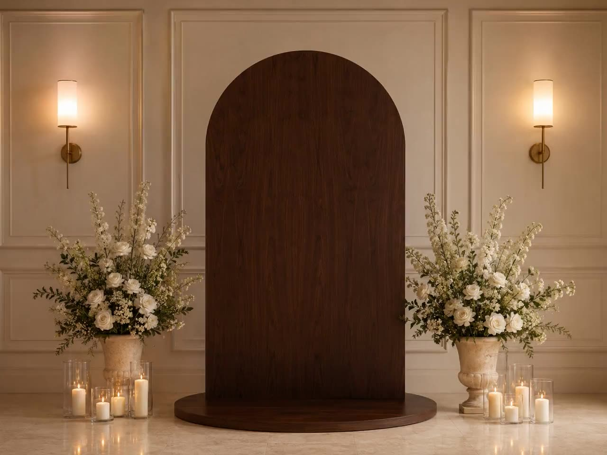

The reference look · same engine
This page copies the reference site's own art direction — light stage, quiet type, fine strands with warm tips.
Your scroll is the playhead. Keep going — the picture doesn't stay a picture.
It's pulling into fiber streams — his face site's exact move, on our footage. Solid blending keeps them visible on a light ground.
The dandelion finale
A rotating fiber ball with radial spikes — the shape his demo ends on. Made by Smith Digital using Claude.
Same kit, three attributes changed: data-sf-blend="solid",
data-sf-scatter="strands",
data-sf-form-shape="orb". With a real portrait clip in
place of the walnut footage, this is the reference site's hero,
one-to-one.